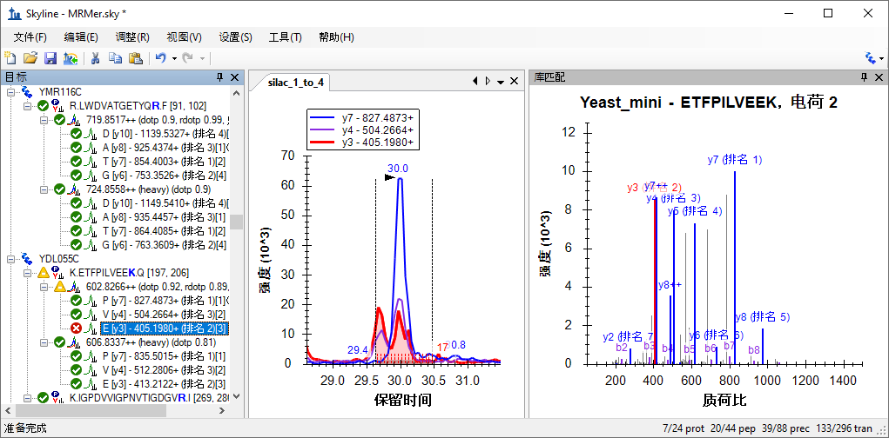
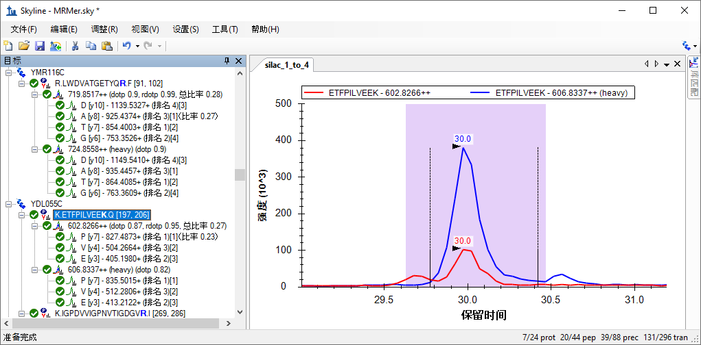
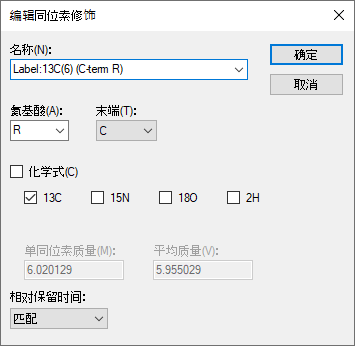
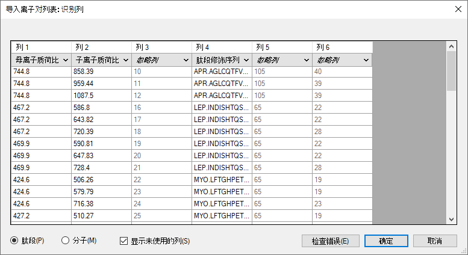
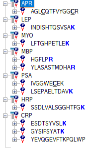
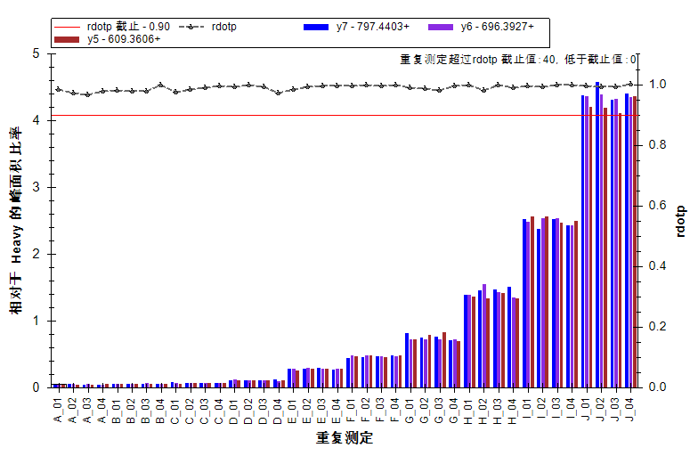

This tutorial covers how to work with Selected Reaction Monitoring (SRM also referred to as Multiple Reaction Monitoring - MRM) data acquired with transition lists that were not created with Skyline. It also introduces how Skyline can be used to work with quantitative experiments that employ matching isotope labeled internal standard peptides.
In this tutorial, you will work with data as it was published with the introduction of the tool MRMer1, and also the data from an inter-laboratory study by Addona and co-investigators2, hereafter referred to as Study 7, performed as part of the National Cancer Institute supported Clinical Proteomics Technology Assessment for Cancer (CPTAC). Study 7 immediately preceded the introduction of Skyline as the tool of choice for the large inter-laboratory studies of the CPTAC Verification Working Group. As such, its accumulated data files provided the perfect test suite for ensuring Skyline could support the types of experiments being carried out by the Verification Working Group.
Even if you lack transition lists created outside Skyline, however, you can still learn about the features Skyline offers for working with LC-MRM acquisitions that use stable isotope labeled peptides as internal standards for analyte quantification. If you seek extremely high confidence in your peak identifications and quantitative measurements, matching reference peptides and Skyline support for them can play a critical role in helping you achieve your goals.
To start this tutorial, download the following ZIP file:
https://skyline.ms/tutorials/ExistingQuant.zip
Extract the files in it to a folder on your computer, like:
C:\Users\brendanx\Documents
This will create a new folder:
C:\Users\brendanx\Documents\ExistingQuant
If you have been using Skyline prior to starting this tutorial, it is a good idea to revert Skyline to its default settings. To do so:

The document settings in this instance of Skyline have now been reset to the default.
Since this tutorial covers a proteomics topic, you can choose the proteomics interface by doing the following:

Skyline is operating in proteomics mode which is displayed by the protein icon  in the upper
right-hand corner of the Skyline window.
in the upper
right-hand corner of the Skyline window.
Before importing an existing transition list into this new document, you should give Skyline as much information as you have available about the experimental context for which the transition list was designed and in which your data was collected. You will do this by adjusting the settings values for the document before attempting to insert the transition list into it.
This tutorial starts with a look at a data set provided with the MRM analysis software tool named MRMer1, pronounced murmur. MRMer was an early predecessor to Skyline for viewing and integrating MRM chromatograms, and the data set was originally downloaded from its web page in 2008. In the MRMer data set, all of the peptides are from yeast and have MS/MS spectra available in the spectral libraries provided by the National Institute for Standards and Technology (NIST). This means it is fairly easy to give Skyline some very useful information about the peptides monitored in this experiment by specifying a spectral library and a background proteome. How to create your own spectral libraries and background proteome files is covered in detail in the Targeted Method Editing tutorial. Here you will use existing files which have been reduced to the minimum information necessary to complete this tutorial, in the interest of keeping the ZIP file download as fast as possible.
To set up the spectral library for the MRMer document, perform the following steps:
The Peptide Settings form should now look something like:

To set up the background proteome for the MRMer document now, perform the following steps:
The Peptide Settings form should now look something like this:

Finally, before you can insert the transition list from the MRMer experiment into the current document, you will need to define the isotope modifications for the peptides it contains. The MRMer experiment included light unlabeled peptides and matching heavy peptides with stable isotope labeled amino acid residues (SILAC) labeling for Lysine and Arginine. If you inserted the MRMer transition list without first specifying the correct isotope modifications, Skyline would fail to recognize the m/z values for the heavy peptides in the transition list.
To specify the SILAC labeling in the Skyline document settings, perform the following steps:
The Edit Isotope Modification form should now look like this:

Add a second isotope modification by doing the following:
The 13C and 15N checkboxes are checked automatically to tell Skyline to use 13C for all carbon atoms and 15N for all nitrogen atoms present in an Arginine molecule, for a total mass shift of 10 Daltons (6x 13C + 4x 15N).
The Edit Isotope Modification form should now look like this:

Skyline automatically calculates both the monoisotopic and average masses, approximately 8 Daltons for Lysine (K) and 10 Daltons for Arginine (R) that will result from using 13C and 15N in these amino acid residues.
To finish preparing to insert the transition list from the MRMer publication into the current document, perform the following steps:
You should see an empty spectrum chart appear on the right side of the Skyline Window. You are now ready to insert the MRMer transition list.
There are two ways you can insert a transition list into Skyline:
For the MRMer data set, you will use the first method. For the Study 7 data set, you will use the second method. The first method, using the Insert form, has the benefit of automatically associating peptides with the proteins that contain them, if your document includes a background proteome. Currently this only works for peptides that appear in a single protein in the background proteome, but future versions of Skyline will offer some choice of how to handle peptides appearing in multiple proteins. For this tutorial, the two peptides from the MRMer transition list that appear in multiple proteins have been removed.
To add the transition list peptides to your current document, perform the following steps:
The Insert Transition List form appears:

This will bring up the Import Transition List: Identify Columns form, which should look like this:

This tells Skyline to create the Protein Name column by matching the peptide sequences to proteins found in the background proteome file.
Note that even though the data you copied did not have column headers, Skyline was able to infer the identities of the peptide sequence, precursor m/z and product m/z columns. If you wanted to change those column identifications for some reason, each column has a drop-down list provided for that purpose.
To insert these peptides into the Skyline document:
The main Skyline window should show a number of peptides grouped within their proteins. The peptide icons should contain 3 vertical lines and a
baseline ( ), like a very small MS/MS spectrum, in the lower right corner (
), like a very small MS/MS spectrum, in the lower right corner ( ). The presence of
this image indicates the peptide has an associated MS/MS library spectrum. The peptide label should highlight in blue the C-terminal Lysine or
Arginine, indicating the stable isotope labeled amino acid in the heavy, labeled form:
). The presence of
this image indicates the peptide has an associated MS/MS library spectrum. The peptide label should highlight in blue the C-terminal Lysine or
Arginine, indicating the stable isotope labeled amino acid in the heavy, labeled form:

You can also see at the bottom right corner of the window, in the status bar, the indicator “1/296 tran”, confirming that all 296 transitions from the MRMer transition list were added to the document. To the left, also in the status bar, you can see that the document contains 24 proteins, 44 peptides and 88 precursors, or 2 precursors per peptide.
To have a closer look at the precursors and transitions in the document, do the following:
Note: To see more of the Library Match graph:
Take some time to select individual peptides and transitions in the peptide view. Review the transitions, and how their product ion peaks are ranked by intensity in the MS/MS library spectra. As you change selection in the peptide tree view, the MS/MS spectrum chart will update to show the spectrum that matches the current peptide, and the peak matching the selected transition will be highlighted in red:

You will notice that not all of the peptides have the most abundant product ions chosen for transitions, like the one shown in the image above, and not all of the spectra look as well matched either.
If you do not see the b-ions or the doubly charged fragment ions highlighted, you can have Skyline display them by making the following menu selections:
You may have noticed that Skyline shows the same spectrum for both the light and heavy precursors. This spectral library may contain only spectra for the light precursor, but even if the library contains matches for both light and heavy, Skyline will use only one (by default the standard) to avoid having to worry about different intensity rankings between two MS/MS spectra. If the library contains only the spectrum matching the heavy, labeled form of the peptide, then Skyline will use that spectrum to rank transitions for both light and heavy precursors.
Of course, the most interesting reason to create a Skyline document like this from an existing transition list is to use Skyline to examine data collected on a triple quadrupole MS instrument using the original transition list.
| Note: Since this tutorial was first written it has become common to create extended transition lists, sometimes called Assay Libraries, which can also be imported into Skyline in much the same way for use in analyzing data independent acquisition (DIA) runs. This method is covered elsewhere. |
To import the data supplied with the MRMer publication into the document you have created, perform the following steps:
Skyline begins importing the file into its high-performance data file, where it will require much less disk space, and from which Skyline can retrieve the information it needs very quickly. Progress is displayed in a graph and in the status bar at the bottom of the Skyline window.
Once the import completes, transitions that have measured signal between the integration boundaries, displayed as dashed black lines, will have green dots added to the left of the transition icon. Transitions without a peak that can be included in the chosen peak group show a red dot. Precursors and peptides containing transitions with only green circles also show green dots. This is very nice data. You will see mostly green dots.
To see a transition with a red dot, do the following:
This should leave Skyline looking something like:

You can also change the proportions allocated to the various panes by clicking and dragging the light gray splitter bars between them.
If the chromatogram view is not as zoomed in as it appears in the image above, do the following:
To gain a better understanding of why the y3 ion for this peptide is not included in the chosen peak group:
This should change Skyline to look like:

If you do not see chromatograms for all three transitions, as shown above, do the following:
Now you can see that both y3 and y4 appear to have some interference causing them to display two peaks without complete separation. These are clearly not caused by the same peptide, because they are not present for y7, and relative intensities between the two transitions differ between the two peaks.
If you were still in the process of refining this method, you might try measuring y5 and y8 next time, as the MS/MS library spectrum indicates they might be measurable. If, however, you really want at least an initial measurement from this data, you have two options:
At the MacCoss lab we favor the first option, as the second will introduce unknown variance based on human judgment of the boundary of the interference, which is not really known. In this tutorial, however, you will try both options. To give more space to the chromatogram plot, do the following before starting the next section:
Fortunately, it is now possible to simply mark transitions as not quantitative without removing them entirely. This removes them from total peak area calculations. To remove the y3 and y4 transitions from the light peak group, do the following:
In the Targets view, you should see the y4 text “(ratio 0.37)” and y3 text “(ratio 0.59)” disappear from the end of the light transitions, and the precursor ratio “(total ratio 0.31)” change to “(total ratio 0.24)”. The text for the non-quantitative transitions also turned gray and in the chromatogram view, the lines for y4 and y3 became dashed.
The precursor total area ratio is a weighted mean, using the internal standard peak area as the weights, which simplifies algebraically to:
Removing either a light or heavy peak removes the peak for its matching transition. Hence, when only one pair of transitions remain, as with y7 in this case, the ratio between the light and heavy peaks of that transition (here 0.24) will also be the total area ratio for the precursor.
To adjust the peak integration boundaries in an attempt to remove interference from the quantitative measurements, perform the following steps:
This should leave Skyline showing something like:

In this case, y4 and y3 show ratios of 0.31 and 0.35 respectively and y7 shows 0.23, yielding a weighted mean, precursor total ratio of 0.27.
The two total ratio values 0.24 and 0.27 produced by the two different techniques of dealing with interference are both very close to the true ratio of 0.25 for this 1 to 4 (light to heavy) SILAC mix. The ratios of the peaks that showed interference (y3 and y4 for the EFP peptide), however, are closer to 1:3 than 1:4, calling into question how well this manual adjustment technique is actually working, and highlighting the reason we prefer removing such transitions entirely from quantitative calculations.
Further inspection of the data in this document will show you that most of the ratios for these peptides are extremely close to the expected value of 0.25. Also where a precursor has 3 or more transitions, Skyline displays a dot-product (dotp) value between the peak areas and the matching MS/MS peak intensities. Most of these are quite close to 1.0, for an exact match. You will also see a ratio dot-product (rdotp) calculated between the peak areas of the light and heavy standard peaks, with most values showing either 1 or very close to it, indicating highly similar relative intensities between light and heavy transition peak areas.
Finally, before moving on to the second document in this tutorial, you many notice that 2 peptides (K.YVDPNVLPETESLALVIDR.L and K.FPEPGYLEGVK.T) have transitions with only blank space where the others have green or red circles. This means the mzXML file you imported contained no data for these transitions. You can open the mzXML file in a text editor and search for the precursor m/z values to verify yourself that the precursors lack the transitions indicated by the original transition list. These types of anomalies are fairly typical of working with transition lists created either manually or by tools receiving less use and testing than Skyline.
In this next section, you will be working with the inter-laboratory CPTAC Study 72, completed by the Verification Working Group before even the initial release of Skyline version 0.1 in 2008. Methods were created using spreadsheets and the resulting mass spectrometer data was analyzed using vendor-specific software.
Again the first task is to create a Skyline document from an existing transition list. The first step in inserting any transition list into Skyline is examining the transition list to understand what settings Skyline will require to recognize the m/z values in the list. To begin this examination:
You should be presented with a spreadsheet that looks something like this:

You can tell that this is a spreadsheet created manually by someone who put significant effort, using borders, merged cells and highlighting, into making this set of transitions intelligible to other people, a job which Skyline now handles automatically.
Each peptide in this list has a light and heavy form. In the “Signature Peptide” column for each heavy peptide a single stable isotope labeled amino acid residue is highlighted in red. Scroll down through the entire list, and you will see that there are 4 labeling schemes:
This labeling scheme is impossible to represent with only global modifications, like the ones used for the MRMer document, because some of the Lysine and Arginine labeled peptides also contain internal Valines and Leucines. The simplest strategy for dealing with this is to use global modifications for C-terminal Lysine and Arginine again, as you did for the MRMer document, and then apply the Valine and Leucine modifications manually.
To prepare a new document with appropriate modifications for the Study 7 transition list, perform the following steps:
The 13C checkbox is automatically checked, to tell Skyline to use 13C for all carbon atoms present in an Arginine molecule, for a total mass shift of 6 Daltons (6x 13C).
The Edit Isotope Modification form should now look like this:

To finish preparing the document for the Study 7 transition list, do the following:
To begin the work of adding targets to Skyline:
On this page, you will see the raw transition list, with 66 transitions, that was imported into the 4000 QTRAP instruments used in the study. However, you should remember that Skyline still lacks the information in its settings to handle the heavy transitions for the Valine and Leucine labeled peptides. To rectify this:
Excel will present a version of the same data found in the “Raw” tab with the 9 transitions removed for the 3 heavy precursors with labeled Valine and Leucine. To add the remaining 57 transitions to your new Skyline document, perform the following steps:
This will bring up the Import Transition List: Identify Columns form, which should look like this:

Skyline should present the following error message:
Messages like this are not uncommon when working with transition lists created outside Skyline. Others are presented in the Skyline instructional video on this subject (Video 3: Existing Experiments). Some of the most common reasons for seeing an error of this type are:
This last potential cause is the case for the current transition list, and you can see the message directs you to the Instrument tab in the Transition Settings form.
To correct this issue, perform the following steps:
This should leave the Skyline peptide view looking like:

Eight peptides display bold, blue C-terminal K or R, but the other 3 lack a labeled amino acid. Those are the ones that need V or L explicitly labeled, because these modifications cannot be achieved through the Peptide Settings - Modifications tab.
To specify an isotope modification on the V in the first peptide, perform the following steps:
The Edit Isotope Modification form should look like:

This modification will apply a varying mass shift to any amino acid, depending on how many Carbon atoms it contains.
The Valine in the selected peptide will not yet be bold, because the peptide still does not contain a heavy precursor. To add the heavy precursor now, do the following:
The peptide view should now look like this:

Now expand both the “744.8398++” precursor and the “747.3481++ (heavy)” precursor:
Verify that the ions contain matching transitions, and they differ by 5 Daltons, as expected.
To create labeled precursors for the two remaining peptides, perform the following steps:
You now have a Skyline document that accurately reflects the information in the original Study 7 transition list.
Thanks to the support of five major triple quadrupole vendors (Agilent, SCIEX, Shimadzu, Thermo, and Waters), Skyline now installs with full support for importing all of their formats without requiring any conversion. This means you can import data into this document from one of the sites that used a SCIEX 4000 QTRAP to measure these transitions by performing the following steps:
Skyline may take a second or two to read the list of sample names in this multiple sample WIFF file, but then it should present you with a form that looks like this:

For this tutorial, to reduce the time that will be required to complete the import:
Skyline should present the following message to allow you to remove the repeated prefix “7_3_” from all of the names it will use to display information about these replicates:

Skyline will begin importing the data from this WIFF file into its high-performance data file (Study 7.skyd), where it can be accessed much faster, and where all imported data for a document is compressed into a single file for easy sharing.
While Skyline is importing the raw data, which may take several minutes to complete (though it takes only 11 seconds on a modern 4-core i7 processor), you can begin rearranging the graph views for optimal viewing. To show and reposition the peak area and retention time replicate comparison views, do the following:

The currently selected peptide “YEVQGEVFTKPQLWP”, which was the peptide at the C-terminal end of CRP protein, was actually somewhat problematic for the Verification Working Group in Study 7. As the data is imported, you can see that Skyline still sometimes fails to integrate the peaks across its replicates consistently. Several retention time outliers remain, and even some of the closer peaks over 25 minutes do not appear to be the same peptide, as the majority integrated at about 24.7 minutes. One clear problem is that the heavy, spiked in form is never very intense relative to the light, endogenous form.
Note that you can hover over the bars in either of the replicate charts until a hand cursor appears, and then click to navigate to the chromatogram for the corresponding replicate. You could use this to navigate to the chromatogram for each likely misidentified peak, and correct it using the same technique you used in the MRMer document, clicking and dragging below the x-axis, but for this tutorial, you can just delete this peptide, as the Verification Working Group did for their subsequent experiments.
You will see that Skyline has done a much better job of integrating the rest of the peptides in this document. With a dataset containing only 10 peptides, however, we highly recommend carefully reviewing each peptide and applying manual adjustment where something is obviously incorrect.
First, in the image above, you can see that the precursor “541.7637++ (heavy)” for the peptide “IVGGWECEK” appears to be missing data. This is because the transition list supplied to the mass spectrometer only specified one decimal place for precursor m/z, and it was rounded incorrectly to “541.7”. You can check this on the “Raw” tab in the Excel spreadsheet.
To get the correctly calculated precursor in this document to match up with the measured data, do the following:
This should cause a green circle to appear beside the “541.7637++ (heavy)” precursor.
Another integration issue is that many elements in the peptide view display orange and red circles, indicating transitions with no integrated peak area. This is quite useful during certain phases of method refinement, as discussed in the Targeted Method Refinement tutorial, but for a highly refined method like this, it is usually not providing relevant information. For this reason, there is an option to integrate peak areas for all transitions between the boundaries of the most intense peak and change the red dot indicator to show only when the area for a transition is zero.
To turn this on now, do the following:
| Note: This setting no longer impacts quantitative calculations as it did until Skyline 4.2. It now only impacts the colored dots in the Targets view and the “Peak Found Ratio” field in Skyline reports. |
Skyline should now look something like:

The Peak Areas view in the image above gives you a pretty clear idea of what the Study 7 experiment was. It was a calibration curve with each concentration measured in technical quadruplicate. You can see that the heavy isotope labeled internal standard was injected at a constant concentration, but that over 50+ injections its peak area is degrading slightly. Although in the Retention Times view, you can see the peptide retention time was extremely stable, perfect for use in scheduled runs.
In this section, you will focus on the Peak Areas view and the many options it provides for inspecting multiple replicate data sets. To give the Peak Areas view more room on your screen:
The Peak Areas view should pop out of the main Skyline window and float above it. Reposition it out of the way of the Targets view.
To get started:
You will see that the first peptide and the last 5 peptides present peak area charts similar to the one in the image above, while the 4 peptides between these appear much less precise.
One important reason for co-injecting the stable isotope labeled reference peptides is that they can be used to normalize the peak areas of the endogenous unlabeled peptides, which should remove some of the run-to-run variability in those measurements. To see this visually in the Peak Areas view, do the following:
You should now see a normalized chart like the one below with the peptide SSDLVALSGGHTFGK selected:

You will see that, indeed, precision among the replicates for each concentration appears to have improved.
Review the other 4 peptides, and you will see that they still do not display the expected pattern.
Another interesting way of looking at this normalization is by each transition separately. In a well behaved peptide, the ratio of each light transition to its heavy counterpart should be relatively similar. To review the ratios of the transitions separately, do the following:
For the 6 well behaved peptides, you should see a chart like the one below, with the ESDTSYVSLK peptide light precursor 564.7746++ selected:

As expected, the ratios are quite similar. The second and third peptides (INDISHTQSVSAK and LFTGHPETLEK) are not quite as clean, but no real problems in transition ratios stick out.
This should cause the peak area graph to look like:
This seems to indicate some interference in the transition for y3, since its ratio, at low concentrations, is so different from the others for this peptide.
The Peak Areas view provides another way of inspecting the relative intensities of the transitions within a precursor. You can use it now to take another look at the HGFLPR peptide, by doing the following:
The chart should change to something like:
Again, this chart clearly indicates interference on the transition for y3 (brown) that becomes less of a factor as the concentration of the endogenous peptide increases, beyond the E replicates. If you move the peak area view to a location where you can also see the chromatogram charts, you can click on the individual bars to see the interfering peak, which, in this case, is pretty clear, as in replicate E_03 below:
As with the case in the MRMer document, you might attempt to adjust the integration boundaries to exclude the interfering peak, but it is probably a better idea to just delete the y3 transition altogether or make it non-quantitative, especially since it never provides a very large contribution to the total peak area for the peptide. To gain some insight into the precision of these measurements, do the following:
The Peak Areas chart should have changed to look something like:
If the peptides do not appear in this order, do the following:
Of course, for analyte precursors, shown in red, the coefficients of variance (CV) are very high and of no real interest, because the data set contains 10 different concentrations points for the analyte peptides. The CV values for the heavy precursors, however, shown in blue, are informative, since they were supposed to be injected into all samples at a constant concentration. Given what you have seen so far, it should not be surprising that the 6 peptides identified as clearly displaying the expected concentration changes also have CV values around 10% or lower, while the other 4 peptides have CV values closer to 40% or even %50.
With just a few simple operations in Skyline, you have learned things about this data set that required weeks and the involvement of statisticians and programmers for the Verification Working Group to learn in the original study. If you have done the Targeted Method Refinement tutorial, you may now be imagining why you would want to run a refinement cycle involving a scheduled multi-replicate data set to better understand how your targeted peptides respond in this setting before measuring them on high value samples.
It would be easier to interpret the data in the replicate graphs if the x-axis showed the concentration of the sample instead of the name of the replicate.
Skyline has extensive built-in support for calibration curves which you can learn more about in the Absolute Quantification tutorial. For now, you will simply use the built-in Analyte Concentration annotation to give Skyline more information about the spiked in concentrations in these replicate runs.
The Document Grid can be used for this purpose. To show the Analyte Concentration report field do the following:
The Document Grid should now be showing you the Replicate, Sample Type, and Analyte Concentration fields in 40 rows, one for each sample. The concentrations at which the samples were prepared were:
| Sample | A | B | C | D | E | F | G | H | I | J |
| Concentration (fmol/µL) | 0 | 60 | 175 | 513 | 1500 | 2760 | 4980 | 9060 | 16500 | 30000 |
When you are done entering these values, the Document Grid should look like this:

You can now use the newly entered concentrations in the Peak Areas: Replicate Comparison graph by doing the following:
The Peak Areas graph should now look like:

This graph shows that the CVs are quite low until the very lowest concentrations. You can easily switch to a graph showing the mean ratios with whiskers showing the standard deviations by doing the following:
This should change the graph to look like:

Eight different labs participated in Study 7, and each generated several data sets similar to the one you have been reviewing in this tutorial. Not all of them, however, experienced the same issues in the same ways. The data from a different site and a different sub-section of this study is also included with this tutorial. In this case, the document has already been created and the data set imported.
To open the document with Study 7-II data from site 52, perform the following steps:
The file will open quickly, and you will see that the CV values for the injected isotope labeled standards are different, appearing as in the chart below:

The peptide INDISHTQSVSAK is the only one of the 4 from the first data set that still has a CV around 40%, while the peptide LSEPAELTDAVK now has a CV around 25%.
If you look at the Retention Times: Replicate Comparison graph, however, you will see that Skyline has chosen the wrong peaks for 3 of the “Blank” replicates (though this issue was fixed a long time ago – but after the document data was imported and saved):

If you correct these by clicking and dragging beneath the x-axis, the CV for the heavy precursor of LSEPAELTDAVK drops to around 10% with most of the other peptides.
To review light:heavy ratios in this data set, perform the following steps:
You will find that the charts for all peptides, even INDISHTQSVSAK look quite nice in this data set.

This seems to indicate that the internal standard is doing its job of compensating for variance in measurements of this peptide. To review the un-normalized data:
It would be hard to guess from this chart that the normalization would be so effective:

Finally, returning to the peptide in which we detected interference in the first data set:
Here also, you will see clear evidence of interference on the y3 transition:
Unlike the first data set, however, it is much harder to see the interference by inspecting the individual chromatograms. In this case, due to slightly different chromatography conditions, it is rarely possible to see evidence of two peaks in the integrated range for y3, as in replicate E_03 shown below:

The NCI CPTAC Study 7 provided quite a lot more data, all of which is now public. Skyline can help you learn a lot about this data quickly, even though the study was performed without its participants even knowing that Skyline would ever exist.
In this tutorial, you have learned how easy Skyline makes it to approach data from experiments designed and executed without any consideration for Skyline, whether those be your own experiments, before you started using Skyline, or experiments of others you wish to review or possibly repeat. For both the published data sets of MRMer and NCI CPTAC Study 7, you quickly created a Skyline document from transition lists, even when they contained relatively complicated modification schemes, including isotope labeled internal standards.
You have also learned a bit about the features Skyline provides for working quantitative targeted proteomics experiments involving isotope labeled peptide precursors. From the ease with which isotope labeling modifications can be defined to the ease with which they can be assigned, Skyline simplifies the work of creating instrument methods for these experiments. From accurate light:heavy peak area ratios to powerful chart display options, Skyline gives you rich insight into data collected for these experiments.
1. Martin,D.B. et al. MRMer, an interactive open source and cross-platform system for data extraction and visualization of multiple reaction monitoring experiments. Mol. Cell Proteomics. 7, 2270-2278 (2008).
2. Addona,T.A. et al. Multi-site assessment of the precision and reproducibility of multiple reaction monitoring-based measurements of proteins in plasma. Nat. Biotechnol. 27, 633-641 (2009).